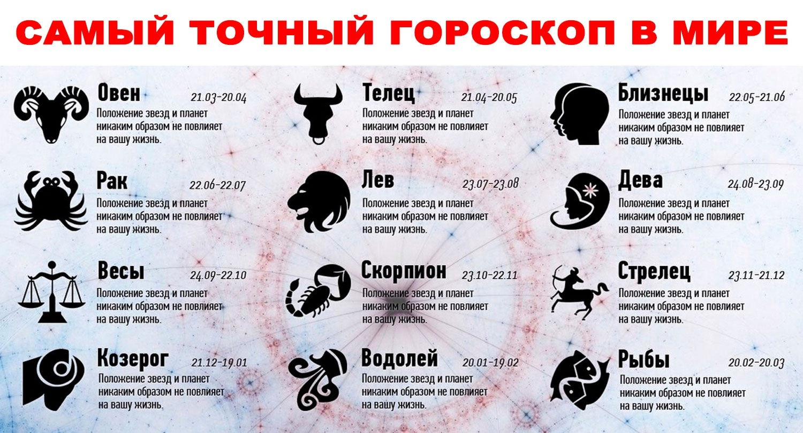

Происхождение знаков зодиака
V век до н. э.
Жрецы связали положение дел с положением небесных тел.
Да кто это такой ваш Зодиак?
начало VII века до н. э.
Первоначально слово зодиак происходит от латинского слова zōdiacus, которое, в свою очередь, от греческого ζῳδιακὸς κύκλος (zōdiakos kyklos), что означает «круг из животных», в основе которой лежит ζῴδιον (zōdion), уменьшительная форма ζῷον (zōon) «животное». Это связано с тем, что половина знаков в классическом греческом зодиаке представлена в виде животных.
13й знак зодиака
24 августа 2021
Не так давно NASA заявило, что знаков зодиака тринадцать, а не двенадцать, как считалось ранее. Более того, к ним может добавиться еще и четырнадцатый. По новой «звездной» реформе, тринадцатым знаком стал Офиукус, или Змееносец. Он вступает в свои права с 30 ноября по 18 декабря.